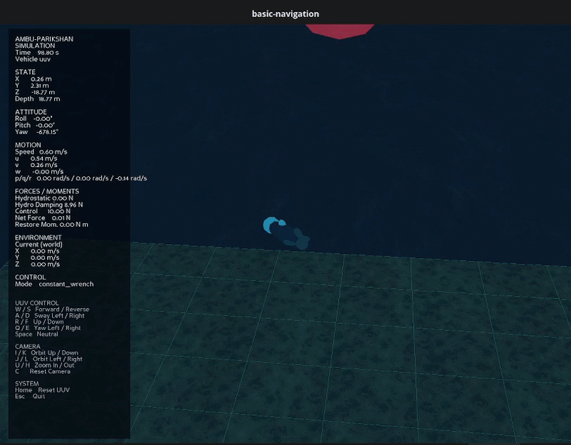
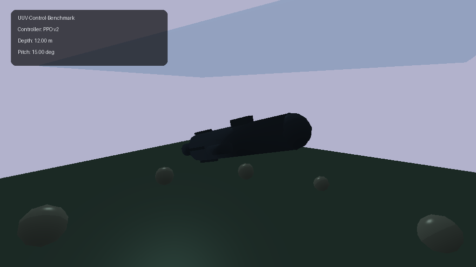
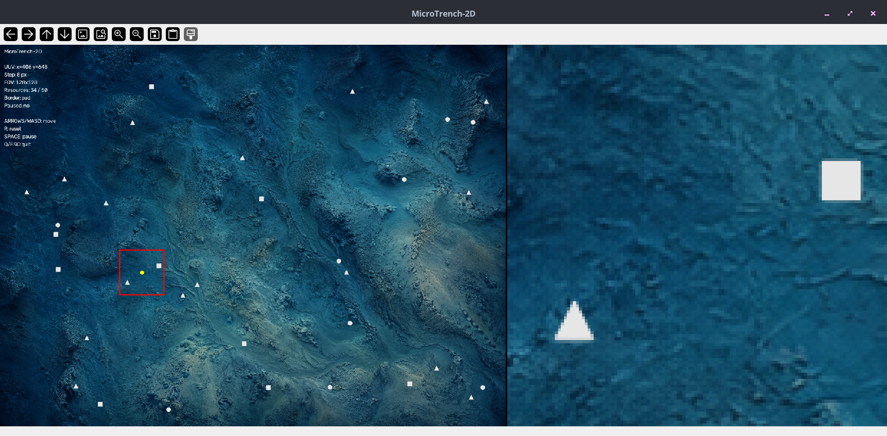
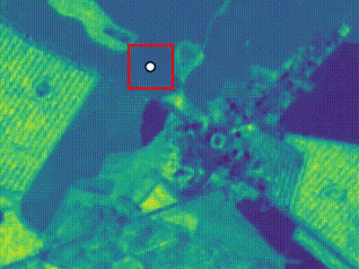
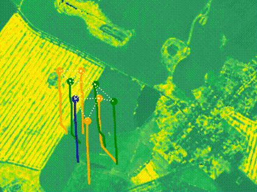
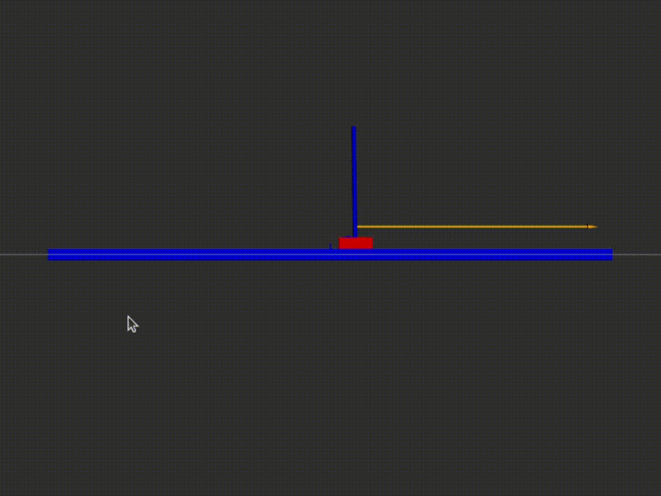
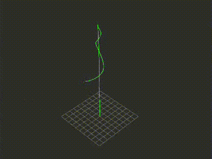

Planning methods for UUV teams to map the seabed and monitor environmental conditions.
RESEARCH PROGRAM
Multi-Agent Intelligence for the Deep.
RESEARCH AREA
UUV AUTONOMY
CURRENT PHASE
ALGORITHM DEVELOPMENT
Peacock Dynamics is an independent robotics research group developing autonomy for underwater vehicles. We build control algorithms and simulation tools for UUVs that need to plan surveys, divide tasks, and coordinate when sensing or communication is limited.
Our current work covers survey planning, task allocation, and vehicle control in simulation. We measure coverage, repeated travel, and vehicle separation. Next, we plan to integrate these methods with vehicle systems and evaluate them in controlled trials. Seabed mapping and environmental monitoring are target applications.
Task allocation and motion planning for teams operating with limited communication.
Simulation environments to test vehicle dynamics and control before system integration.
RESEARCH IN PROGRESS
Research in UUV autonomy
We’re building simulation software and control methods for teams of underwater vehicles. Current studies examine disturbance response, local search, and cooperation over limited-range links.

AMBU-PARIKSHAN 1.0
UUV simulation
AMBU-PARIKSHAN 1.0
Testing UUV dynamics and control.
We use Ambu-Parikshan 1.0 to test UUV dynamics, sensing, and control under repeatable conditions. HydroLab-3D models 6-DOF motion and currents. It supports single- and multi-vehicle runs, including headless runs and an optional viewer.

UUV-CONTROL-BENCHMARK
Depth and pitch control
UUV-CONTROL-BENCHMARK
Comparing depth and pitch controllers.
We use UUV-Control-Benchmark’s nonlinear depth-and-pitch model to compare LQR, PPO, and residual control under external forces, persistent bias, and model mismatch. This gives us a controlled way to compare responses across those conditions.

MICROTRENCH-2D
Testing local exploration and resource search.
MicroTrench-2D is a CPU-only simulation for testing local search and coverage methods. Each vehicle acts on local observations and records the resources it finds; it cannot access the full world state. Hydrodynamics, vehicle dynamics, and sensor physics are excluded so we can study search behavior separately. Multi-UUV behavior remains future work for this simulator.

MULTIUUV-LINK
Testing cooperation over limited-range links.
MultiUUV-Link is a simulation study with four UUV agents. Each works from local observations and private memory, with messages limited by range. The agents divide exploration frontiers, update routes, predict collisions, and reassign work when one loses contact. In the canonical Hybrid benchmark, mean final coverage was 98.63% and mean redundancy was 0.2337. In a fault-recovery run, the agents found all 10 resources and maintained at least 131.52 px separation against a 128 px minimum. These are simulation results.
OUR PRODUCTS
Simulation for UUV autonomy research
We use MicroTrench-2D to test local search and coverage methods, and Ambu-Parikshan 1.0 to study UUV dynamics, sensing, and control in 3D.
Both simulators are available free under the Peacock Dynamics License, subject to approval. Email a short description of your research to: .
MicroTrench-2D
A CPU-only simulation for search and coverage with local observations and persistent resource records. It runs in Python without a separate simulator. Vehicle and sensor physics are not modeled.
TECHNICAL ARCHITECTURE
Ambu-Parikshan 1.0
A 3D simulator for UUV dynamics, sensing, and control. HydroLab-3D supports repeatable six-degree-of-freedom and multi-UUV studies, with an optional viewer. It runs in Python with its package dependencies.
TECHNICAL ARCHITECTURE
BEYOND THE PUBLIC SHOWCASE
Research Partnerships & Strategic Engagement
Peacock Dynamics welcomes engagement with research institutions, industry collaborators, and prospective strategic partners interested in exploring our work beyond the publicly available research portfolio.
Our public showcase highlights selected simulation tools, research implementations, and experimental results. Additional technical demonstrations, research discussions, and selected implementation details may be made available through direct engagement.
Technical Demonstrations
Explore selected simulation recordings, experimental results, and capability demonstrations through direct technical engagement.
- Simulation Demonstrations
- Experimental Results
- Technical Briefings
Research & Engineering Collaboration
Engage with our research methodologies, system architectures, validation approaches, and ongoing investigations in marine robotics and autonomous systems.
- Research Collaboration
- Architecture Discussions
- Applied R&D
Strategic Partnerships & Investment
We welcome discussions with prospective industry partners and strategic investors interested in research collaboration, technology development, and future applications of autonomous marine systems.
- Industry Partnerships
- Strategic Collaboration
- Investment Discussions
DIRECT TECHNICAL ENGAGEMENT
Interested in Exploring Our Work?
Connect with Peacock Dynamics to request a research briefing, discuss potential collaboration, or explore strategic engagement opportunities.
REQUEST A RESEARCH BRIEFING
Additional technical materials may be shared selectively, subject to the nature of the inquiry and applicable confidentiality considerations.
RESEARCH BACKGROUND
Earlier robotics work behind our UUV research
10 EARLIER WORKS · 05 RESEARCH AREAS
Our marine research builds on earlier work in aerial and ground robotics, control, perception, mapping, and simulation. These studies and tools are the starting point for our current UUV work.

RESEARCH AREA 01
Local Navigation and Coverage.
MicroUAV-2D let us test local-observation navigation and discrete movement on a CPU-only grid. AgriDroneRL used PPO to plan first-visit coverage across a vegetation utility field. This work gave us tools to test navigation and coverage before adding underwater vehicle physics.

RESEARCH AREA 02
Multi-Robot Coordination.
PPO-Driven Swarm Control combined learned movement, repulsion, graph consensus, and stochastic role assignment. In simulation, it eliminated 138 close encounters while maintaining coordinated coverage. The Boustrophedon Navigator completed lane coverage with a mean cross-track error of 0.0518. We are adapting these methods to marine vehicles, where teams must work with limited communication.

RESEARCH AREA 03
Guidance and Control Under Disturbance.
InterceptDynamics-Py compared PD guidance with constrained MPC under relative-state dynamics, acceleration limits, and slew-rate limits. In a separate Cart-Pole study, LQR stabilized the system under continuous stochastic disturbance. We draw on this work in our research on UUV trajectory control and disturbance rejection.

RESEARCH AREA 04
Perception and Mapping.
Reflect-Aug-Seg tested range-aware LiDAR augmentation and found measurable improvement in semantic segmentation using reflectivity proxies. VLMaps stored spatial memory with visual-language embeddings and open-vocabulary queries. Both studies used ground or indoor settings. We are assessing which ideas could transfer to underwater perception and mapping.

RESEARCH AREA 05
3D Mapping and System Integration.
ApolloSplat-Py reconstructed a lunar terrain patch from 15 historical images, producing a 580,552-point cloud and ROS2-ready meshes. TerraDrop-PX4 connected image perception to PX4 control in ROS2 and Gazebo simulation using camera geometry and visual servoing. This work gave us experience with 3D mapping and perception-to-control integration.
Founders
FOUNDER · MODELING · SIMULATION · AUTONOMY · SWARM CONTROL
Ayushman Mishra
Ayushman is a robotics engineer focused on control, modeling, simulation, reinforcement learning, perception, and multi-agent autonomy. His earlier work includes swarm coverage, UAV navigation, LQR disturbance rejection, visual servoing, and terrain reconstruction.
At Peacock Dynamics, he leads research on UUV autonomy, simulation, and swarm coordination. His current focus is on teams that must work with limited communication, uncertain dynamics, and incomplete sensing. His work has used ROS2, Gazebo, and PX4.
CO-FOUNDER · MODELING · SIMULATION · AERODYNAMICS · R&D
Rajeev Tidke
A mechanical engineer, Rajeev works in aerospace design, computational fluid dynamics, structural analysis, and product development. His earlier work includes UAV aerodynamics, CFD and FEA, numerical optimization, genetic algorithms, propulsion, CAD, prototypes, electric-wheel dynamometers, and solid rocket motor systems.
At Peacock Dynamics, he leads mechanical engineering and R&D, taking concepts through design, simulation, prototyping, and testing. This work connects the autonomy software to the physical vehicle and its hardware.
RESEARCH QUESTIONS
Questions shaping our UUV research
-
01
How should a team divide a survey?
When several vehicles map or inspect an area, how can they divide the work without leaving gaps or repeating each other’s routes?
-
02
How do currents affect vehicle control?
Currents, drag, sensor noise, and localization drift make a UUV’s motion hard to predict. We study how control methods perform when the model is incomplete.
-
03
What can vehicles do with limited communication?
Underwater links can be slow or unreliable. We study coordination methods that let each vehicle make local decisions and share updates when a connection is available.
-
04
How do we move from simulation to field tests?
Our algorithms will need to work with onboard computers, sensors, propulsion, and vehicle software. Integration and controlled trials are the next steps toward evaluating them on marine systems.